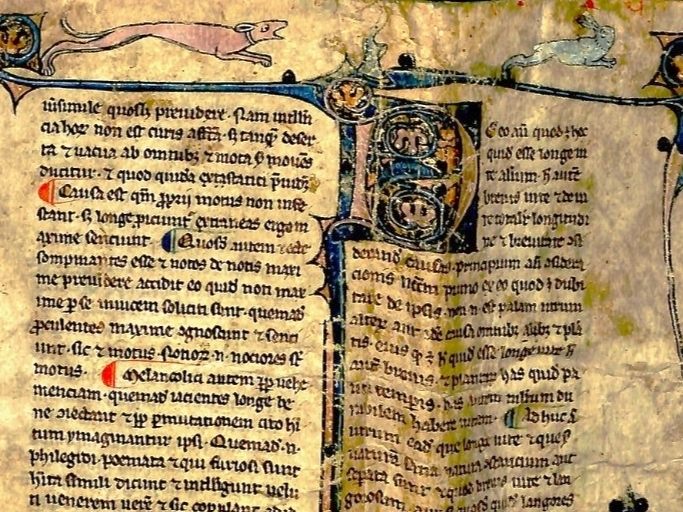

Esplora i frammenti con miniature
Aristotele, Parva Naturalia. Fondo Parrocchie Soppresse della Città, 34/7.3,
XIII secolo

Esplora i frammenti con notazione musicale
Antifonario. Monastero del Corpus Domini 15.8, metà XIV secolo

Esplora i nuovi frammenti ritrovati
Giustiniano, Digesto con glossa di Accursio. Fondo Rev. Fabbrica di S.Pietro 120.65, fine XIV secolo